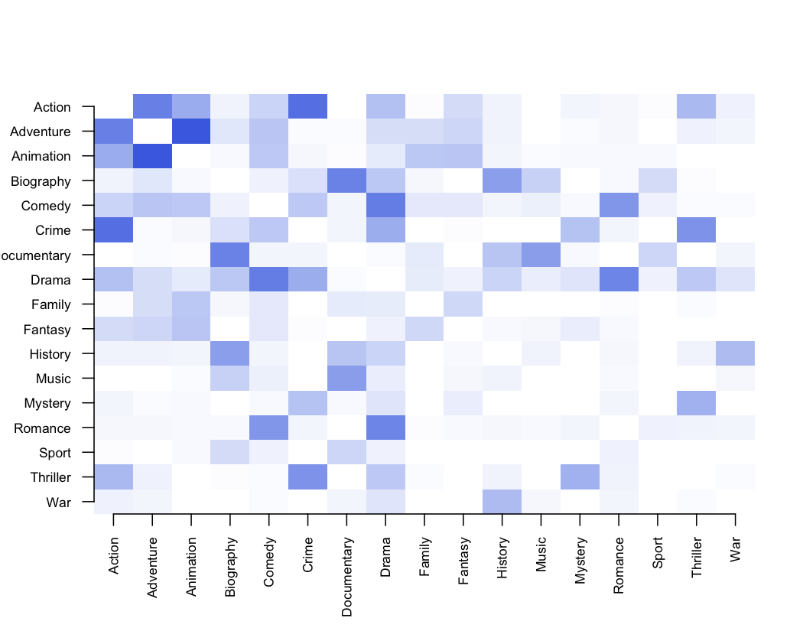

Vignettes and guides
Vignettes
Guides
- Input formats
- Choosing a similarity measure
- Full, fractional and attention counting
- Sequences, windows and event logs
- Comparing groups
- Exporting networks
- Verification against Nestimate
Case studies
Overview
cooccure builds co-occurrence networks, in which two items are linked when they appear in the same transaction: the keywords of one article, the genres of one film, the actors of one cast, the codes of one interview passage, or the states of one learning session. The network shows which items tend to go together and how a field, a corpus or a set of sessions is organized around them. The weight of a link starts as the number of shared transactions. Because frequent items co-occur often by chance alone, the weight can be normalized for item frequency by one of eight similarity measures, such as association strength or the Jaccard index (van Eck & Waltman, 2009), and each transaction’s contribution can be counted fractionally (Perianes-Rodriguez et al., 2016). One network can be built per group, for example per decade, and the networks compared.
All of this is done by one function, cooccurrence(). It reads delimited columns, long (item, transaction) tables, binary and one-hot tables, wide sequences, lists of vectors and event logs; sliding windows turn ordered sequences into transactions. It returns a tidy edge list with a weight and a raw count per pair, which converts to the network classes of igraph, tidygraph, cograph and Nestimate.
Method
Let be the transaction-by-item incidence matrix, with when item occurs in transaction . The co-occurrence counts are , with the diagonal set to zero, and is the number of transactions containing item . Similarity measures rescale by the frequencies (van Eck & Waltman, 2009):
similarity |
Weight of the edge – |
|---|---|
"none" |
|
"jaccard" |
|
"cosine" |
|
"inclusion" |
|
"association" |
|
"dice" |
|
"equivalence" |
|
"relative" |
(directed) |
With fractional counting each transaction of items contributes to each of its pairs instead of 1 (Perianes-Rodriguez et al., 2016); with attention counting a pair contributes , decaying with the distance between the two positions in an ordered transaction. Every measure except "relative" gives an undirected network; "relative" divides each row by its sum, so its edges have a direction and the edge list holds one row per direction.
Installation
install.packages("cooccure")
# development version
install.packages("remotes")
remotes::install_github("mohsaqr/cooccure")Examples
movies holds 1,000 highly rated films with their genres in one comma-separated column. Genres are linked when they are assigned to the same film, and Jaccard similarity discounts the most common genres.
library(cooccure)
genres <- cooccurrence(movies, field = "genres", sep = ",",
similarity = "jaccard", min_occur = 20)
print(genres, n = 6)
#> # cooccurrence: 17 nodes, 102 edges | density: 0.7500 | mean degree: 12.0000 | 998 transactions
#> # similarity: jaccard | counting: full
#> # possible edges: 136 | isolates: 0
#> # top nodes: Drama(deg=16,str=1.153), Comedy(deg=16,str=0.8949), Romance(deg=15,str=0.5377), Action(deg=14,str=1.009), Adventure(deg=14,str=0.8788)
#> from to weight count
#> Adventure Animation 0.285 39
#> Action Crime 0.237 59
#> Comedy Drama 0.211 159
#> Action Adventure 0.208 44
#> Biography Documentary 0.204 44
#> Drama Romance 0.198 131
#> # ... 96 more edgesThe weight matrix can be drawn as a heatmap.
plot(genres)
Jaccard weights of the genre network.
split_by builds one network per decade, and the group table compares them.
by_decade <- cooccurrence(movies, field = "genres", sep = ",",
split_by = "decade", similarity = "jaccard",
min_occur = 5)
as.data.frame(by_decade, what = "groups")
#> group n_nodes n_edges possible_edges density weight_mean count_sum
#> 1 1970s 12 34 66 0.515 0.1334 136
#> 2 1980s 14 43 91 0.473 0.0977 164
#> 3 1990s 13 39 78 0.500 0.1126 187
#> 4 2000s 16 66 120 0.550 0.0769 335
#> 5 2010s 17 85 136 0.625 0.0666 581
#> 6 2020s 13 39 78 0.500 0.1004 184actors is a long table with one row per actor and film; actors in the same film are linked, giving a collaboration network. One decade of a split network converts to igraph with group =.
cast <- cooccurrence(actors, field = "actor", by = "tconst",
split_by = "decade", min_occur = 2)
summary(as_igraph(cast, group = "2010s"))
#> IGRAPH ab8d353 UNW- 145 756 --
#> + attr: name (v/c), weight (e/n), count (e/n)Authors and citation
cooccure is written by Mohammed Saqr, Sonsoles López-Pernas and Kamila Misiejuk. Mohammed Saqr maintains the package. Questions and bug reports can be submitted through the repository issue tracker. The package citation is available through citation("cooccure").
The bundled movies, actors and actor_genres data are derived from the IMDb non-commercial datasets (https://data.imdb.com/non-commercial-datasets/).
References
Perianes-Rodriguez, A., Waltman, L., & van Eck, N. J. (2016). Constructing bibliometric networks: A comparison between full and fractional counting. Journal of Informetrics, 10(4), 1178–1195. https://doi.org/10.1016/j.joi.2016.10.006
Saqr, M., López-Pernas, S., Conde, M. Á., & Hernández-García, Á. (2024). Social network analysis: A primer, a guide and a tutorial in R. In M. Saqr & S. López-Pernas (Eds.), Learning analytics methods and tutorials: A practical guide using R. Springer. https://doi.org/10.1007/978-3-031-54464-4_15
van Eck, N. J., & Waltman, L. (2009). How to normalize cooccurrence data? An analysis of some well-known similarity measures. Journal of the American Society for Information Science and Technology, 60(8), 1635–1651. https://doi.org/10.1002/asi.21075